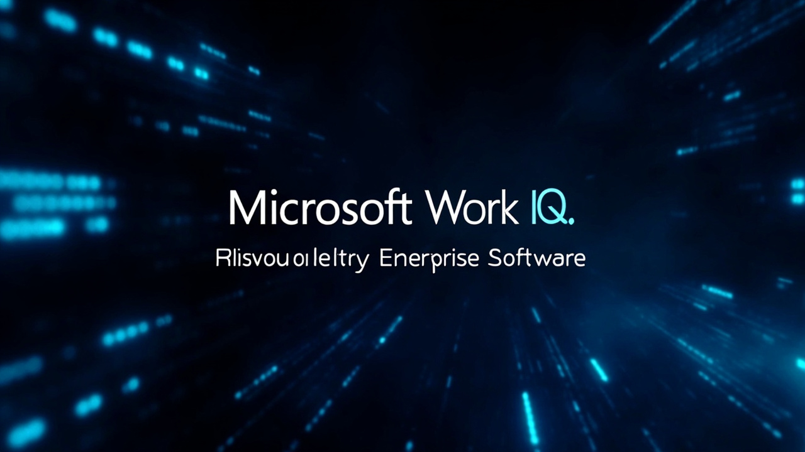

AI 代理實時決定跨系統工具調用！Microsoft 押注 2026 為企業 AI 轉捩點

Microsoft 形容 2026 年是企業軟件從「人類驅動」轉向「AI 代理驅動」的轉捩點。Work IQ 是這個新時代的核心基礎設施。
「Work IQ 專為代理優先的世界而建，在這個世界中，AI 代理——而非人類開發者——能實時決定跨系統使用哪些工具。」
— Microsoft 官方描述代理能在運行時動態發現數據結構，「詢問」數據「你是什麼」，數據會自我描述，無需預定義模型。
Microsoft 將數千種企業操作「壓縮」成 10 個通用工具（fetch、create、update 等），代理可實時動態組合。
所有調用均通過 Microsoft Entra 認證，包括新的 Entra Agent ID（非人類身份），數據留在租戶邊界內。
按工具調用、編排和推理計費，支援在 Microsoft 365 管理中心設定成本控制和用量監控。
| 維度 | 傳統企業軟件 | Work IQ（代理優先） |
|---|---|---|
| 數據發現 | 需預定義 API 和整合 | 代理運行時動態查詢 |
| 工具調用 | 人類開發者編碼連接 | 代理實時自主選擇 |
| 系統擴展 | 新增整合需大量會議協調 | 代理自描述接口自動適配 |
| 上下文窗口 | 需容納整個企業數據上下文 | getSchema 按需查詢，小記憶體佔用 |
| 操作數量 | 數千種操作需要單獨整合 | 10 個通用工具動態組合 |
假設一家服裝製造商突然收到大量退貨。傳統 IT 系統難以發現問題，但代理可以：
Microsoft：Work IQ API 為代理的工作方式優化，減少往返次數、降低延遲、提高令牌效率、擴大數據訪問吞吐量，且數據留在租戶邊界內。
Microsoft：AI 代理訪問數據和使用工具的方式與人類完全不同，傳統 API 會導致代理結果質量更低、速度更慢、成本更高。
Microsoft：任何集中能力都是目標，但替代方案更糟——每個代理建立自己的數據存儲、數據移動、自己的身份驗證、自己的審計缺口。Work IQ 反而縮小了攻擊面。
Microsoft 正押注 2026 年是企業軟件從人類驅動轉向 AI 代理驅動的轉捩點。Work IQ 將企業軟件從「應用程序 + 數據」模式徹底重構，讓代理能在運行時動態發現數據、自助組合工具、跨系統執行操作。這是企業 IT 數十年來最大的典範轉移。
文章作者警告：如果每個 IT 操作都需要巨額令牌消耗稅，生產力提升可能不足以抵消成本。企業需要為代理優先的 AI 時代做好成本控制準備。